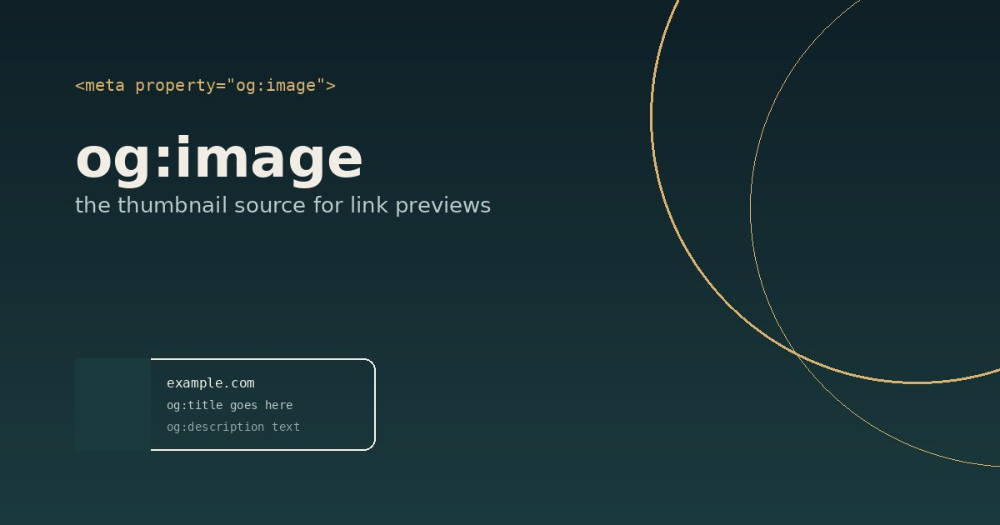

How WhatsApp turns a link into a thumbnail
When you paste a URL into a chat, WhatsApp fetches that page and reads a few meta tags from its <head> — this page carries the actual example.
1. It fetches your page
As soon as the link is pasted, WhatsApp's crawler makes a plain HTTP GET request to the URL — no login, no JavaScript execution, just the raw HTML.
2. It reads the Open Graph tags in <head>
These are the exact tags in this page's <head>:
<meta property="og:title" content="How WhatsApp builds link-preview thumbnails"> <meta property="og:description" content="WhatsApp's crawler reads Open Graph tags..."> <meta property="og:image" content="https://example.com/.../og-image.jpg"> <meta property="og:url" content="https://example.com/...">
3. og:image becomes the thumbnail
The image that og:image points to is downloaded and shown as-is — WhatsApp
doesn't crop it into an OG image, it just displays what's already there. This is the actual
file this page references:

What the crawler needs to actually pick it up
og:imagemust be an absolutehttps://URL, reachable without login- Under roughly 600 KB, ideally 100–300 KB
- At least ~300px wide, aspect ratio no more extreme than 4:1 (landscape 1200×630 is the safe default)
- JPG, PNG, or WebP — not SVG or GIF
- The <head> with these tags must appear within the page's first 300 KB of HTML
Rendered preview (mock-up)
Why previews sometimes don't show up
WhatsApp caches whatever it fetched the first time, sometimes for days, and there's no
official way to force a refresh — changing the URL slightly (e.g. adding ?v=2)
is the usual workaround. If og:image is missing, it falls back to a text-only
preview using the page's <title>; it does not scan the page for a random
image to use instead.